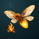
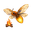
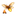
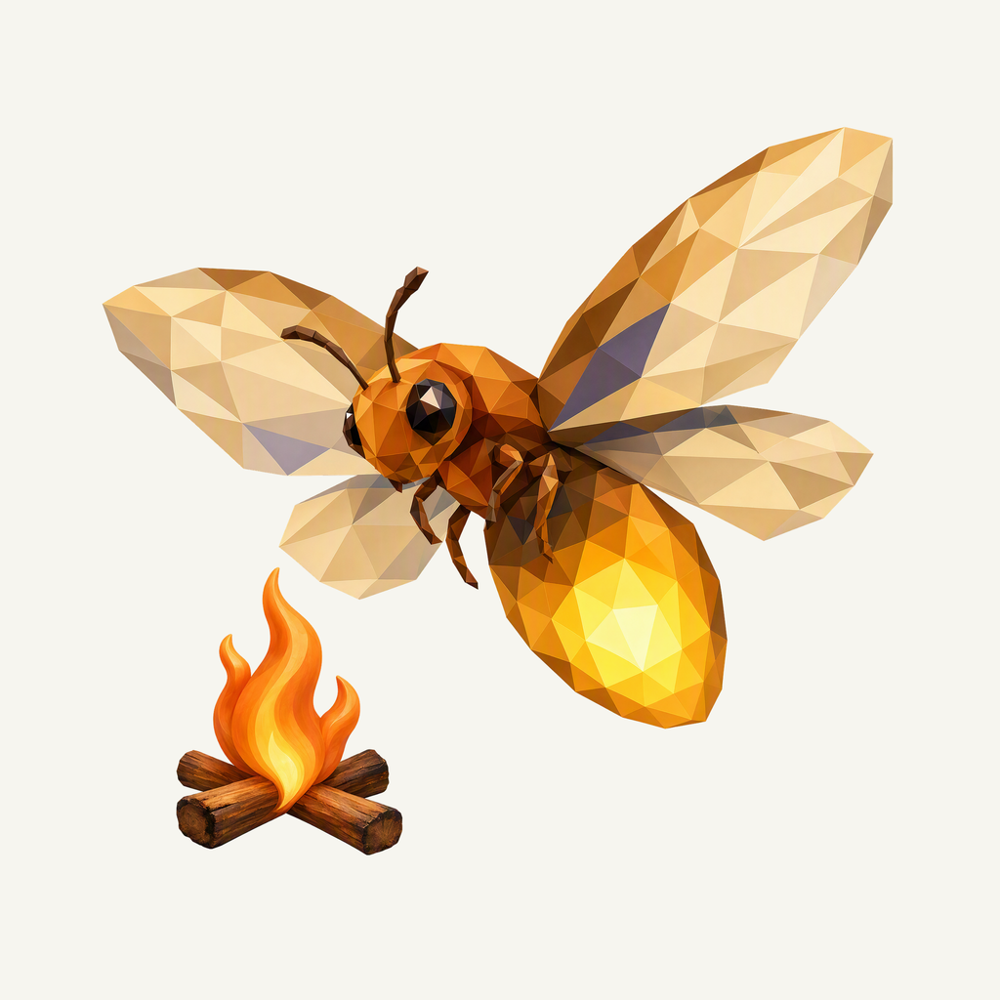
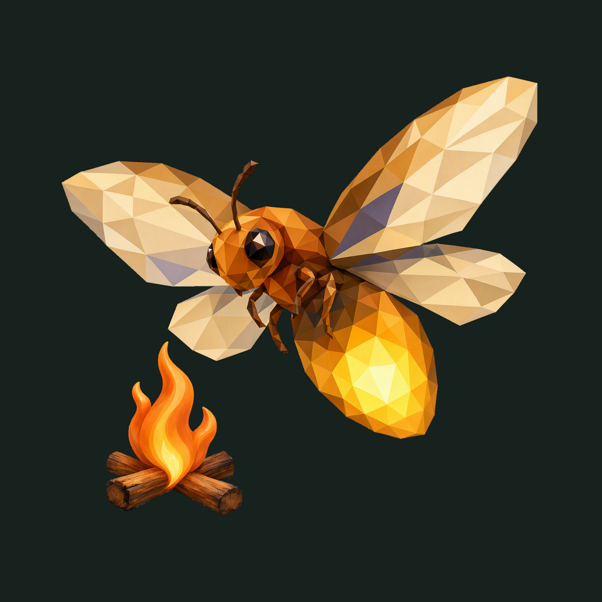

01 / Composition
Room for the wings
The broad-winged firefly leads the mark. A small fire below its gaze supplies the second point of interest, with clear space around the complete silhouette.
Animal family · Selected Firefly study
A broad-winged firefly, a small campfire, and room to breathe.
Adopted in source · finishing 02
Native 2048 × 2048
01 / Composition
The broad-winged firefly leads the mark. A small fire below its gaze supplies the second point of interest, with clear space around the complete silhouette.
02 / Drawing
Connected champagne, bronze, and gold planes describe the insect. Two visible eyes give its gaze direction; curved flame and wood grain add tactile depth to the small campfire.
03 / Presentation
A deep blue-green field carries a quiet crescent, sparse stars, and cloud contours. Warm light around the flame and abdomen lifts the mark from the matte night surface.
Presentation tiles at 128/64 px; transparent artwork for sidebar and favicon.



At 24–32 px, the broad wings, amber abdomen, and small fire carry the identity. At 16 px, eyes, fine legs, and wood grain simplify into the warm silhouette.
A deep night field, with colors sampled from the native firefly artwork.
Select a swatch to copy its hex value. Firefly’s existing site primary, #3C83F6, remains a separate UI color.
One foreground, checked on two contrasting backgrounds.


Azure Foundry · gpt-image-2 · native 2048 × 2048
Loading prompt…


{kind=link}
{kind=link}
{kind=link}
{kind=link}
{kind=link}